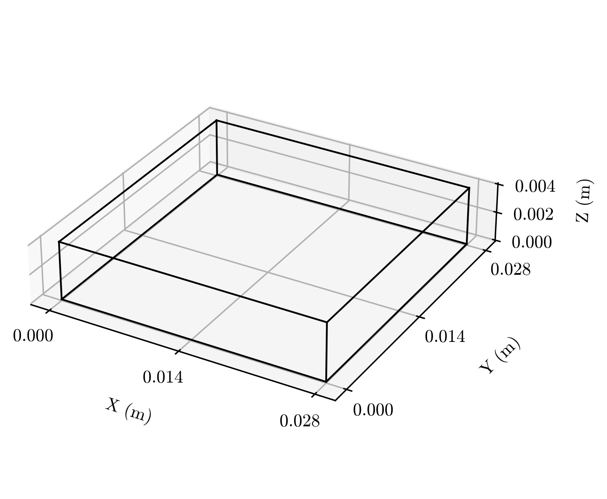
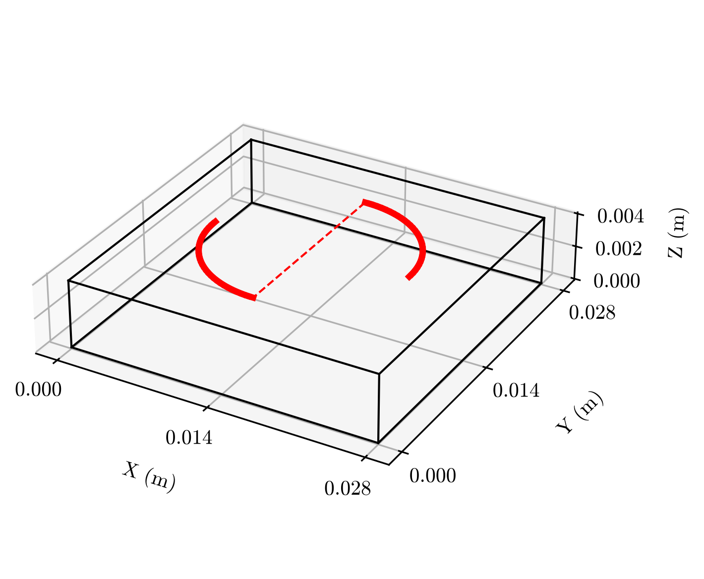
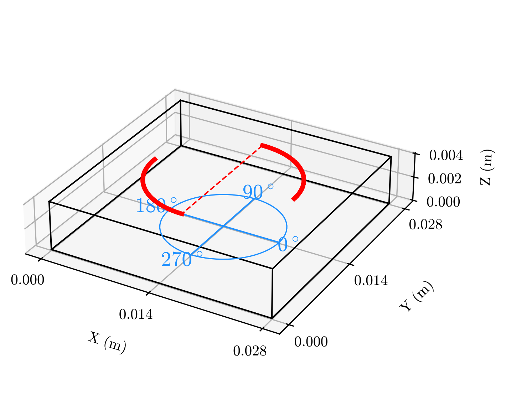
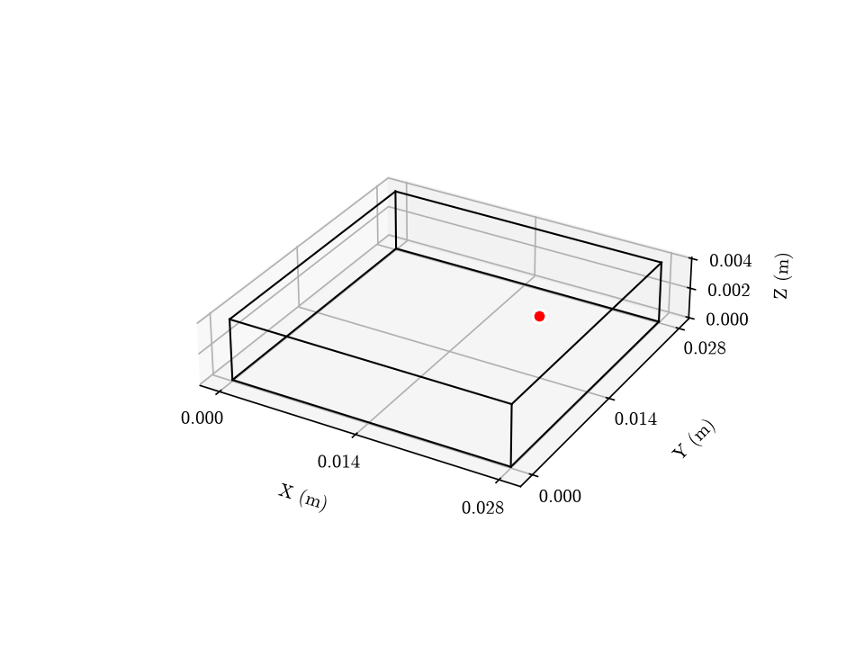
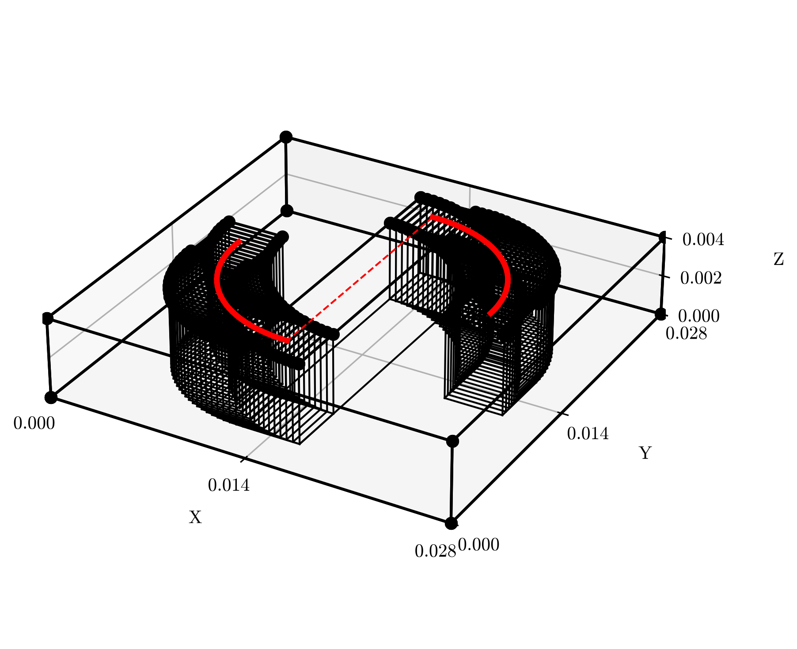
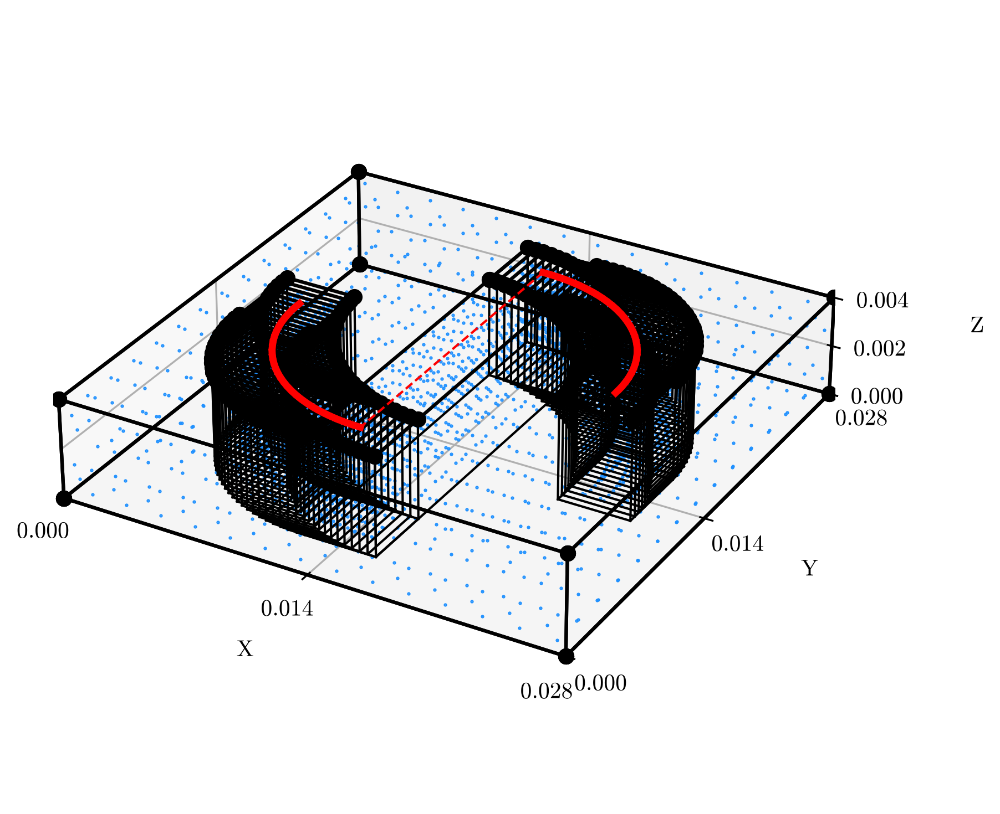
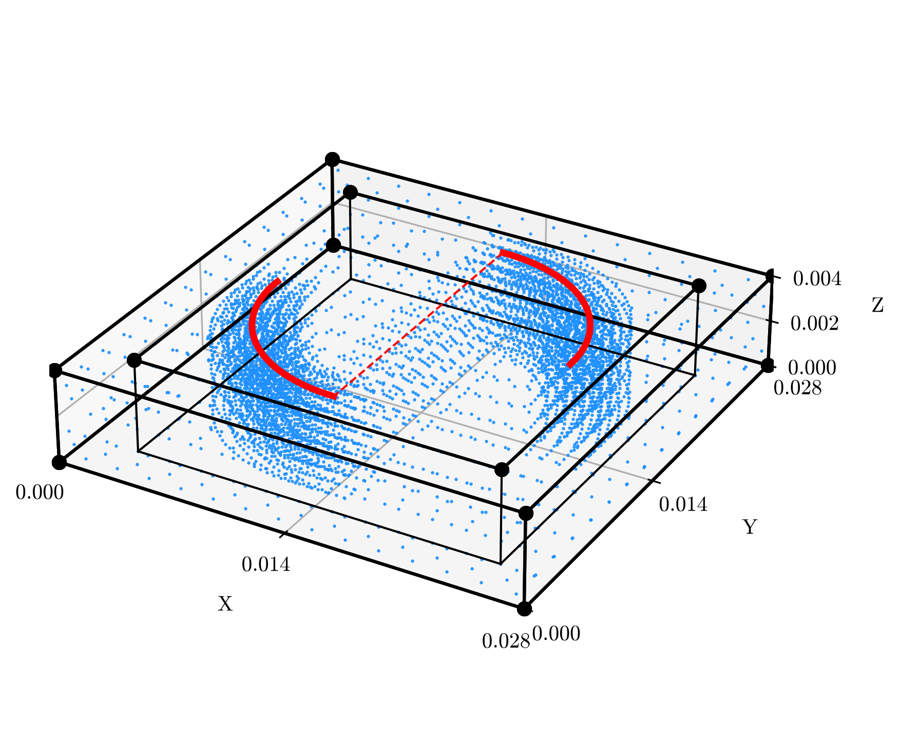
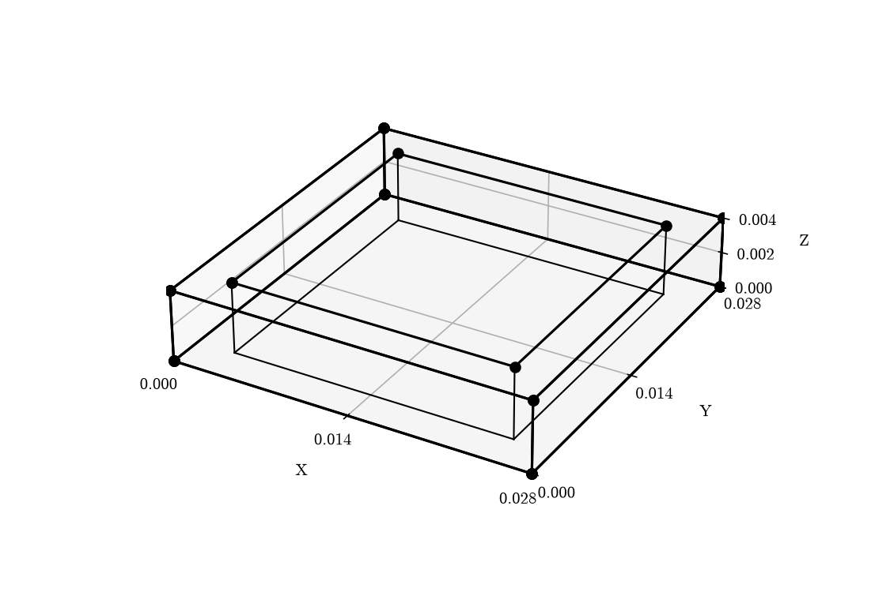
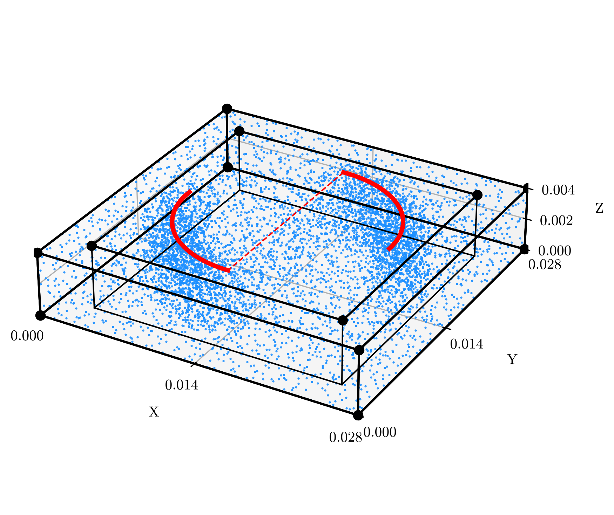

Complex Pathing#
The purpose of this example is to explain the intricacies and value of the ComplexLinearPath and associated functions.
The full runnable script can be found at examples/public/complexpaths.py on GitHub.
Note
It's recommended to read all the examples in order, as previously explained portions won't be explained as thoroughly in later examples, and vice versa for the content introduced in this example.
Note
Some of the function calls, particularly for the visualizations, have been simplified from the calls used to generate the images. This is to highlight only the necessary parameters for these functions.
Includes#
- Three-Dimensional Problem (
BoundedBox) - Complex Pathing (
ComplexLinearPath,circle_waypoint_generator()) - Uniform Grid Sampling (
UniformSampler) - Sobol Point Sampling (
SobolSampler) - Localized Sampling (
.add_path_shape())
Domain#
Starting with a 3D Domain.
time = pinnjax.Time(0, 3, 0.25) # s
domain = pinnjax.SpatialDomain(
min=(0, 0, 0), # m
max=(0.028, 0.028, 0.004), # m
times=time
)
Let's look at it.
domain.draw()
Figure

Neat.
Pathing#
Pathing grants us the ability to locate a point through time, with its initial introduction representing the location of a laser during Metal Additive Manufacturing. However, there is no reason why it couldn't be adapted for use elsewhere, perhaps as the source location in a water simulation.
The ComplexLinearPath, as we will use, is made up of a series of linear paths connected by waypoints. However, for simple shapes, two generators have been provided:
but these simply generate waypoints in the format (x, y), (x, y, t), (x, y, z) or (x, y, z, t).
So, a list of coordinates can be generated, or self-made elsewhere. These are just meant to save you some time.
Since it's more complex, we will use circle_waypoint_generator() here. But you might ask yourself why we would ever want to split our line into a series of smaller lines. The answer lies in geometry.add_path_shape(), which we will get to later. In short, these shapes can be used to specifically sample more points in the region surrounding the 'path'. By splitting a line into smaller pieces both temporally and spatially, we can better concentrate those points where they are needed.
Anyway, first let's locate the center of our domain. Since we want our laser at the top of our shape, we fix the 'z' dimension.
center: tuple[float, float, float] = domain.center(fixed={"z": domain.max[2]})
The path in mind is two quarter-circles where the laser is off as it traverses from one path to the other. If you can't picture that, scroll down and look at the plot.
For the first half:
waypoints1 = pinnjax.circle_waypoint_generator(
center=center,
diameter=0.018, # m -- smaller than the full shape domain.
starting_angle=0,
rotation_angle=90,
time=pinnjax.Time(0, 1.3, 0.05),
segments=30, # 30 segments will result in 31 waypoints.
)
The parameters for this function should be straightforward, but in case it isn't, we are rotating around the outer edge of a circle centered at the top and center of our domain, with a diameter of 0.018, starting at 0° on the Unit Circle and moving 90°.
If degrees scare you, you can use radians instead, just set the parameter:
angle_units = "radians".
This arc is not smooth, but rather made up of 30 segments. The time determines how fast our laser is moving. These calculations are all done internally, but a speed can be provided instead, which represents a uniform linear speed. Or provide nothing and you're left with purely spatial waypoints until a later step.
Now let's draw the second half, this time starting at 270° and moving -90°:
waypoints2 = pinnjax.circle_waypoint_generator(
center=center,
diameter=0.018, # m
starting_angle=270,
rotation_angle=-90,
time=pinnjax.Time(1.7, 3, 0.05),
segments=30,
)
Now, let's combine the two.
waypoints = jnp.vstack((waypoints1, waypoints2))
Remember, these are both just lists of waypoints, so once the Path is generated, the connection line between the two will be included automatically. However, we planned on turning it off, so let's do that.
active: dict[str, list | int] = {"off": 31}
The first quarter has 30 segments, the second has 30, but the connection becomes segment number 31, for a total of 61 segments.
Now let's generate the path_config.
path_config = pinnjax.ComplexLinearPathConfig(
waypoints=waypoints,
is_temporal=True,
active=active
)
Naturally, we give it our generated waypoints, but what else?
First, since waypoints could be (x, y), (x, y, t), (x, y, z) or (x, y, z, t), the configuration initialization has no way of knowing if the given waypoints already include time. Thus, is_temporal simply indicates that the final column is time. If it wasn't already temporal, we could also provide a speed here and the temporal portion would be generated.
Next is active, which we have already used to turn off segment number 31, but we could also turn off multiple sections like active = {"off": [20, 31, 50]}. Naturally, you shouldn't pick numbers greater than the total number of segments in your waypoints. If for some reason you find yourself turning off a large number of segments, it might be more convenient to only turn on the relevant segments with active = {"on": [20, 31, 50]}. But remember, the path 'source' is always moving, particularly because it is mimicking a real-world mechanical device, so even off segments will have a calculated travel time.
Then simply,
path = pinnjax.create_path(path_config)
pinnjax.create_path() identifies which of the three types of path config was provided: LinearPathConfig, CirclePathConfig, or ComplexLinearPathConfig, and creates the appropriate Path: LinearPath, CirclePath, and ComplexLinearPath, respectively.
By creating a Path, we now have access to a number of methods, particularly helpful for verifying and visualizing our work. The previous steps internally included a number of verifications, such as ensuring the times are consecutive, speeds are positive, etc. But it didn't know the SpatialDomain it was attached to, so next let's validate the path on the domain.
path.validate(domain)
The main check here is making sure that the path remains within the domain. If not, you might have some sampling problems later.
Next, let's visualize our Path.
path.draw(domain=domain)
Figure

It even shows when the 'source' is "off".
Remember when we used the circle_waypoint_generator()? Here is a way to verify that we used the correct degrees. Though, sorry degree-aphobes, no radians here.
path.draw(
domain=domain,
show_angle_axes=True,
center=domain.center(fixed={"z": 0}), # let's put it at the bottom.
)
Figure

A picture tells a thousand words, but a video is a bunch of pictures.
So, let's really verify using an animation. This also helps to verify the speeds, assuming you keep that in mind when choosing the number of frames and fps, as well as the fact that different .gif viewers might play back .gifs at different speeds.
path.animate(domain=domain)
Figure

Geometry#
Enough fun, back to business. Let's create a geometry from our SpatialDomain.
obb = domain.to_obb()
Since we are in three dimensions, we should use the BoundedBox.
A BoundedBox is defined as 7 shapes:
- A
Box, and - 6
Rectangles, one on each face.
Plus, an additional Box if initial=True.
geometry = pinnjax.BoundedBox(*obb, times=time)
Sampling#
Since the 1D diffusion example used "point_count" - SobolSampler, let's mix it up for a moment and use "grid_resolution" - UniformSampler. We can swap this out later to really highlight the modularity of \(\texttt{PINN-JAX}\).
method = pinnjax.UniformSampler(mode="grid_resolution")
Let's pick some resolutions per shape. Remember, the temporal sampling is based on the step set in the Time. Unlike SobolSampler, which uses the step as a multiplier, there's no funny business here: the identical points are sampled throughout time.
# reminder, the domain was (0.028, 0.028, 4e-3)
resolutions = [2e-3, 2e-3, 2e-3, 2e-3, 2e-3, 2e-3, 2e-3]
# resolutions are in the same units as the domain, not relative to it.
Since they are all the same, we could also just do resolutions = 2e-3, or have assigned it directly to the method.
geometry.add_path_shape(path, radius=[2e-3, 2e-3, 4e-3])
# The `radius` is defined as the distance from the path, not the total size.
Additional Shapes are added under the 'source' as it travels through time. This is currently only available for BoundedBox, and the additional Shapes are assumed to touch the top surface. Thus, each added path shape is a ComplexShape defined by an interior Box and a Rectangle at the top surface. This way you can assign the correct residuals to the correct points.
resolutions.extend([1e-3, 1e-3])
Make note: you will sample at this resolution for all segments. The more segments you add, the more points this will result in because the path shapes overlap. Granted, this is only a major concern when using "point_count", since the other two scale by domain size, and with more segments, the segments themselves are smaller.
Confused? Probably. Pictures solve everything.
geometry.draw(show_path=True)
Figure

Now let's sample.
geometry.sample(method, resolutions)
Everyone likes pictures.
geometry.draw(show_path=True, show_samples=True)
Figure

Now that the points are sampled, we actually don't need all of those Shapes. In fact, keeping them will complicate things because we will need to assign a residual for each of them, and during 'training' we will need to loop through all of them.
Currently, we have a ComplexShape inside our ComplexShape, which was convenient for assigning samples, but is now unnecessary. .unpack(), well, unpacks the internal ComplexShape. Then, flatten=True replaces all compatible shapes with one all-encompassing Shape. A 'compatible' Shape in this case means all the children have the same Shape, Residual, and Loss.
geometry.unpack(flatten=True)
We could've 'unpacked' and 'flattened' prior to sampling, but the points would be sampled into the larger all-encompassing shape, defeating the point of the localized path shape samples.
Once again, for visual clarity:
geometry.draw(show_path=True, show_samples=True)
Figure

And here we can see the number of samples total. Notice the additional Box and Rectangle. We will need to remember them when we assign losses and residuals.
geometry.print_samples()
Shape 1 (Box): 4704 collocation points
Shape 2 (Rectangle): 336 collocation points
Shape 3 (Rectangle): 336 collocation points
Shape 4 (Rectangle): 336 collocation points
Shape 5 (Rectangle): 336 collocation points
Shape 6 (Rectangle): 2352 collocation points
Shape 7 (Rectangle): 2352 collocation points
Shape 8 (Box): 8384 collocation points
Shape 9 (Rectangle): 2096 collocation points
As always, videos are pretty cool.
geometry.animate(show_samples=True, show_path=True)
Figure

And here is a version where the points from all timesteps are collectively shown.
geometry.animate(show_samples=True, show_path=True, additive=True,)
Figure
You'll notice the general uniform points seem to flash in and out. This is because the general points are sampled at a different temporal discretization than the points added from the path shape. To clarify, it is the same 'step_size', but the start and end points are dictated by the segmentation, so the time discretization is not necessarily aligned.
In the case of UniformSampler, this only affects the additionally sampled points, since all general points are repeated at each time step in the uniform case.
Hyperparameter Exploration#
For something a bit more interesting, let's try this again, but with the SobolSampler.
Despite the fact that I've recreated the geometry and rewritten the function calls, the only change in the following entire section is changing the word 'Uniform' to 'Sobol'.
This is the point of this modular framework -- to best facilitate hyperparameter exploration.
geometry = pinnjax.BoundedBox(*obb, times=time)
method = pinnjax.SobolSampler(mode="grid_resolution")
resolutions = [2e-3, 2e-3, 2e-3, 2e-3, 2e-3, 2e-3, 2e-3]
geometry.add_path_shape(path, radius=[2e-3, 2e-3, 4e-3])
resolutions.extend([1e-3, 1e-3])
geometry.sample(method, resolutions)
geometry.unpack(flatten=True)
geometry.draw(show_path=True, show_samples=True)
Figure

geometry.print_samples()
Shape 1 (Box): 1568 collocation points
Shape 2 (Rectangle): 112 collocation points
Shape 3 (Rectangle): 112 collocation points
Shape 4 (Rectangle): 112 collocation points
Shape 5 (Rectangle): 112 collocation points
Shape 6 (Rectangle): 784 collocation points
Shape 7 (Rectangle): 784 collocation points
Shape 8 (Box): 2815 collocation points
Shape 9 (Rectangle): 719 collocation points
geometry.animate(show_samples=True, show_path=True)
Figure
geometry.animate(show_samples=True, show_path=True, additive=True)
Figure
You should notice two things. First, the SobolSampler results in fewer points even with the same resolutions. This is because the SobolSampler, using "grid_resolution", attempts to calculate the number of 'equivalent' uniform points by estimating the necessary uniform points and then reducing those values by a factor dependent on the dimensionality of the sample space. The second thing you'll notice is that, despite this, the Sobol points seem to better fill the spatial domain, which is the intended point of Sobol sampling.
However, you might rightfully ask yourself why anyone would use UniformSampler. Well, besides being a much more consistent baseline, SobolSampler can vary depending on the selected [SEED], using either get_seed() and set_seed(). Thus, it can often be difficult to determine if a sufficient number of collocation points have been provided or if you simply got lucky.